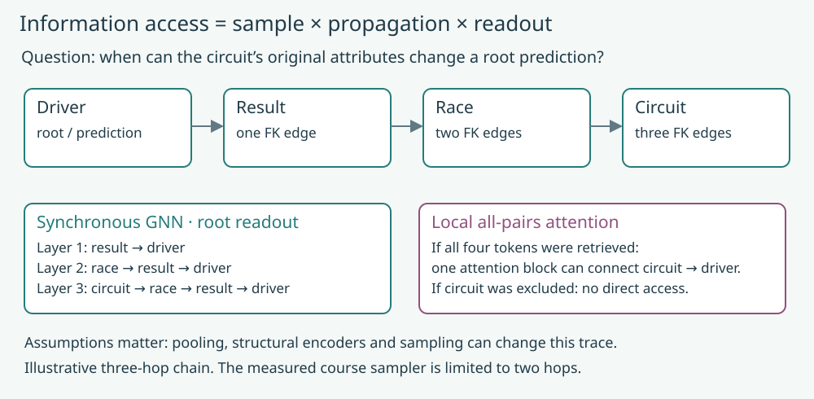
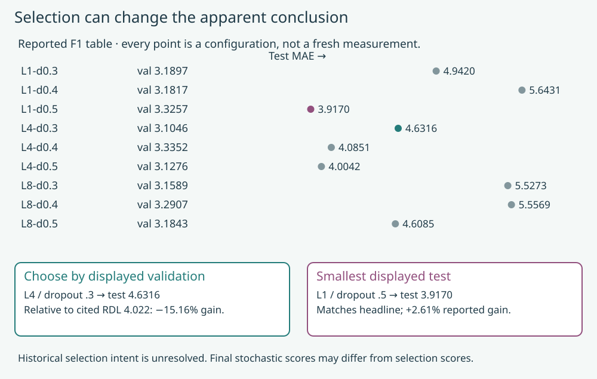
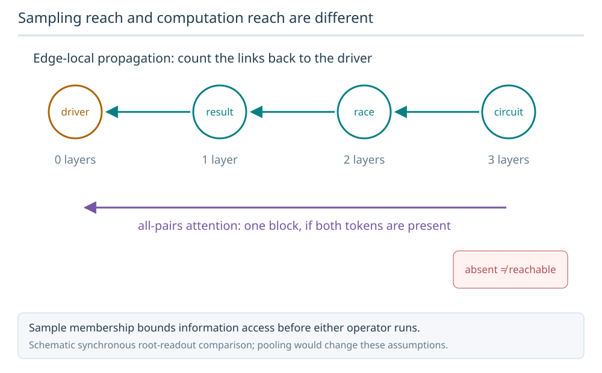
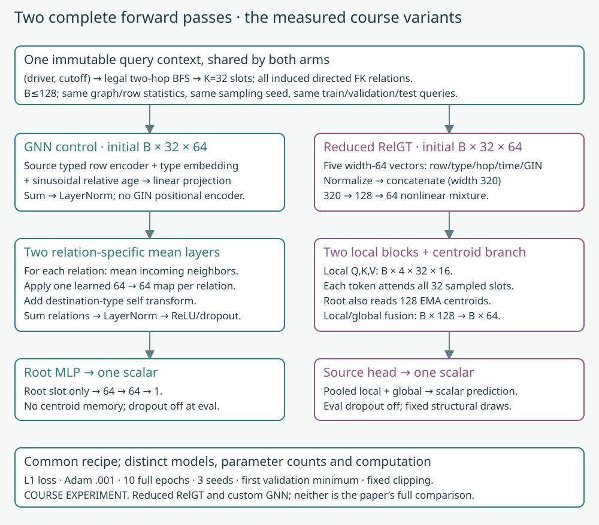
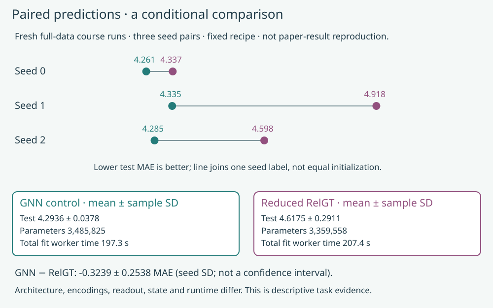

Year 4 · Quarter 3 · Lesson 146
GNN vs graph transformer: defend the comparison
The decision you will learn to defend¶
A graph transformer can connect two sampled rows in one attention step. That is a mechanism, not yet a reason to prefer it. Today you will learn to separate what a model can access, how a winner is selected, and what the measured comparison supports.
Lesson 143 separated a compatible checkpoint from a reproduced training result. Lesson 145 explained RelGT's five encodings and two attention branches, then found query ownership failures in its released cache. The unresolved question is now practical: how can we compare a GNN with a graph transformer without giving either an accidental advantage?
This serves the course mission: defend evidence that learned relational models add value, even when the defensible answer is “this experiment does not establish that claim.” Budget about 20 minutes for the main lesson; use the notebook for the implementation and evidence audit.
1 · Count information paths before counting layers¶
In plain terms. A model cannot use a row that was never retrieved. Once a row is retrieved, the model's communication and readout determine how it can affect the answer.
Three boundaries. Sampling chooses which rows enter a query. Propagation moves information between them. Readout chooses which final representations produce the prediction. A long sampling radius does not automatically give a shallow root-readout GNN access to every sampled row.
Worked example. A four-row chain is driver → result → race → circuit. In a synchronous root-readout GNN, one layer can move the result's original features to the driver. Two layers can move the race's original features there. Three layers are needed for the circuit's original features. Local all-pairs attention can read the circuit after one block if the circuit is already among the sampled tokens. Global pooling or precomputed structural features would change this example's assumptions.


Predict before moving the controls. If the circuit is absent from the sample, will adding attention heads recover its attributes? If the result is a future row, should the sampler reach the otherwise old race through it?
The answer has two parts. Attention cannot recover an excluded row. A future bridge must be rejected before expansion. Validating only the last row's timestamp allows an illegal path to carry information into an earlier prediction.
The actual course sampler below uses at most two hops. The three-hop chain is an explanatory intervention, not a claim that the measured model saw circuits through that route. See RelGT §3.2 for local all-pairs attention; inspect the visible course sampler for the executed access rule.
2 · A winner needs a selection rule¶
In plain terms. “Choose the best configuration” is incomplete. Best on which data, at which stage, and under which tie rule?
A checkpoint is the saved state after an epoch. A configuration specifies the architecture and training settings for a fit. Choosing a checkpoint inside each fit and choosing a configuration across fits are two separate decisions. Both need a rule fixed before looking at test scores.
Worked example from the reported table. The F1 row in RelGT's Table 6 contains nine configurations. The smallest displayed validation MAE is 3.1046, at four layers and dropout 0.3. Its displayed test MAE is 4.6316. The headline test MAE 3.9170 belongs to one layer and dropout 0.5, whose displayed validation MAE is 3.3257.


A precise inference. Selecting by the displayed validation row changes the apparent comparison with the cited RDL score, 4.022. It does not prove which rule the authors actually used. The released trainer allows tied validation minima to replace an earlier checkpoint and reevaluates the saved model. Its evaluation is stochastic. Printed rounded final scores need not equal the selection-time values. The inspected trainer and launch script do not resolve historical cross-configuration selection.
Scope check. This is an arithmetic audit of Tables 1 and 6, not new training and not an accusation of test-set tuning. Historical selection is NOT_ESTABLISHED. Machine-readable table and calculation.
Your rule in the lab. select_config(configs, validation) accepts no test scores. It chooses the first minimum and rejects incomplete or nonfinite scores. The same live function chooses checkpoints in the course trainer. This deliberately differs from the release's last-tie rule. A function signature cannot police where callers obtained a number; the protocol and audit still matter.
Keep selection precision separate from display precision. Here is a synthetic two-configuration example, not a reconstruction of the paper's hidden scores:
| Config | Stored validation MAE | Printed to 4 decimals |
|---|---|---|
| A | 3.10464 | 3.1046 |
| B | 3.10461 | 3.1046 |
The actual first-minimum selector chooses B from stored values. Applied to printed values, it sees a tie and chooses A. Display rounding has discarded selection evidence. Store the original metric and selected identity together; round only the presentation. This explains one limit of a printed-table audit without asserting that rounding caused the published discrepancy above.
Try it after the example. Reverse the configuration order. Which answer changes under exact values, and which changes under rounded values? Check your reasoning
The exact minimum remains B. Under the rounded tie, the first item is now B, so the answer changes with order. A deterministic tie rule cannot recover precision that has already been discarded.
3 · Freeze a comparison that can actually run¶
The paper experiment and the course experiment answer different questions. The complete paper-aligned RelGT runner retains all nine 100-epoch schedules. Lesson 145's temporal failure and cost estimate prevent calling its outputs a clean reproduction. We retain that runner and the canonical RDL runner; neither receives a fresh full paper-protocol fit in this lesson.
The new experiment asks a narrower question: on the full F1 query population, how do two small model designs behave with identical legal sampled contexts and a fixed training recipe?
Sampling reach and computation reach are different
On driver→result→race→circuit, three synchronous edge-local layers are needed for original circuit features to reach the driver. One local all-pairs attention block can connect those tokens only if all were sampled.

Predict: Can more attention heads recover an unsampled circuit?
No. Sampling determines which tokens exist. Attention changes communication among admitted tokens; it cannot restore excluded source data.
Answer: No. Sampling determines which tokens exist. Attention changes communication among admitted tokens; it cannot restore excluded source data.



Common input. Both arms receive the same 32 token slots for each (driver, cutoff) and the same induced FK edges. Both use the source typed row encoder. Query-specific breadth-first sampling admits only rows at or before the owner cutoff, expands at most two hops, and keeps selected connectors. If too few rows exist, it repeats already selected legal rows. It never fills from arbitrary database rows. Every repeated slot gets its incident edges; an isolated query repeats its root. Repetition changes attention multiplicity and aggregation weights, so its frequency is reported.
The GNN control. Add row, table-type and relative-time vectors. Each of two layers transforms the destination's own state and adds a separate neighbor mean for each directed FK relation. Normalize, apply ReLU/dropout, and read the root through an MLP. For one relation with neighbor scalars 2 and 6, the mean is 4; adding ten unrelated rows does not alter that relation mean unless they enter that relation's neighborhood.
The reduced RelGT arm. Normalize and concatenate row, type, hop, time and GIN structural vectors. Mix them to width 64. Two local attention blocks compute interactions within 32 tokens; the root also attends to 128 EMA centroids through the source global branch. Fuse the branches and predict. Evaluation attention dropout is disabled, and structural normal draws are fixed for the evaluation batch layout. GPU aggregation still permits tiny floating-point ordering differences, checked within 0.00001 absolute. These are declared corrections, not claims about historical paper behavior.
Common training. Three paired seed labels, 0–2; ten complete epochs; batch 128; Adam at 0.001 with weight decay 0.00001; L1 loss; gradient norm clipping at 1. Each arm selects its own first minimum validation checkpoint. Test scoring occurs after that selection. Output clipping uses training-label percentiles 2 and 98. There is no hyperparameter search, discarded seed, or test-driven retuning.
What remains different. Parameter counts, structural encodings, relation handling, pooling, centroid state and random-number consumption differ. Equal seed numbers do not imply equal initial weights. Equal epochs do not imply equal GPU seconds. This tests two model designs under a common recipe; it does not isolate attention as the cause of any gap. The GNN control is not the canonical RDL baseline from the paper.
Scope check. Full task coverage is not full paper reproduction. Graph features and statistics reuse the hash-verified L143 snapshot, including its transductive preprocessing. Event-time checks do not establish historical feature-arrival legality. The fixed test population has appeared in earlier course lessons; these results are descriptive rather than a new untouched confirmatory test. Frozen protocol and deviations.
4 · Pair the errors, then limit the claim¶
In plain terms. Compare the two models on exactly the same questions. A row position is not an identity.
A query key is (driver ID, cutoff). For query q, define the error difference:
difference[q] = abs(GNN[q] − target[q]) − abs(RelGT[q] − target[q]).
Positive values favor RelGT; negative values favor the GNN. Worked example: for target 5, GNN prediction 8 and RelGT prediction 6, the difference is 3 − 1 = +2. Shuffling one prediction file must not change the answer. Missing, duplicate, or mismatched keys must fail loudly.
First average over the full query population within each seed pair. Then report the mean and sample standard deviation across the three seed differences. This standard deviation describes seed variation; it is not a confidence interval. Repeated drivers and related cutoff windows also make an independent-row significance test unjustified here.
| Full-data course arm | Validation MAE, mean ± seed SD | Test MAE, mean ± seed SD | Parameters |
|---|---|---|---|
| Typed-mean GNN | 3.197652 ± 0.056532 | 4.293632 ± 0.037816 | 3,485,825 |
| Reduced corrected RelGT | 3.048312 ± 0.102734 | 4.617536 ± 0.291141 | 3,359,558 |
Paired GNN − RelGT test difference: -0.323904 ± 0.253784 MAE (sample seed SD). Positive favors RelGT. Per-seed differences: -0.075640, -0.582870, -0.313201.
All 7,554 primary held-out predictions independently aligned and rescored. Six fresh fits each covered all 7,453 training queries for ten epochs. Both arms used the same 499 validation / 760 test keys. The sampler rebuilt all 8,712 labels and passed its event-time audit. Repeated legal token slots: 43,000 train / 1,228 validation / 10,623 test. These are occurrences, not distinct rows.
Full selected paper reproduction: INCOMPLETE. Nine full RelGT fits and a fresh canonical RDL comparator: NOT_RUN. Historical identity/selection: NOT_ESTABLISHED. Whole paper: NOT_RUN. Course runs do not change these verdicts.


What happened here. Reduced RelGT has lower validation MAE in all three pairs, while the GNN has lower test MAE in all three. This does not identify the cause: tuning, regularization, distribution shift and architectural differences remain entangled. We keep the frozen settings and report the reversal; changing the recipe after seeing test scores would answer a new question.
Read the result as a conditional statement. Name the task, sampling rule, preprocessing, model sizes, training budget and selection rule. Explain what the difference measures and which architectural cause remains unisolated. A lower error here cannot establish that one paradigm dominates relational databases.
5 · Lab: make the contract executable¶
Open the prepared notebook · Student notebook · Reference solution.
- TODO: legal context. Keep the original query cutoff through expansion and handle isolated roots without global fallback. Checks include a future bridge leading to an otherwise legal row.
- TODO: select with validation. Reject an incomplete search and preserve the first-tie rule. Apply your function to the paper's displayed validation row and the saved training histories.
- TODO: paired errors. Align both arms by full keys before computing differences. Checks intentionally shuffle predictions and inject duplicates.
The full row encoders, attention, centroid updates, typed message passing and training loop are visible in the notebook. Default execution runs synthetic mechanism checks and independently scores saved author evidence. It does not silently rerun the six remote fits. The explicit course gate requires prepared data; the source-reproduction preflight remains separate.
Exit defense. Write 150–200 words: what the selected comparison establishes; why the printed selection discrepancy remains unresolved; which two changes would make a stronger causal experiment; and why a passing temporal audit does not prove historical availability. Suggest changing one thing at a time—for example, a matched five-element encoder/readout comparison or a prespecified equal-compute search—without promising either would reverse the ranking.
Ask the teaching agent about any unclear path, tensor, metric or evidence boundary. Completing the author's notebook is not your mastery record. Your status remains PENDING_WRITTEN_DEFENSE until you submit and defend your explanation.
Read, retrieve, then return¶
Primary reading: RelGT §4 and Appendix A.4, alongside the pinned release. Trace main_node_ddp.py's within-fit selection separately from the sweep launcher. Revisit the comparison reference tomorrow, then answer without looking: “What makes two scores comparable?”
Lesson 147 will turn these distinctions into a survey question: which open architectural problems have both a plausible mechanism and a tractable falsification experiment?
Carry this forward. Turn the unresolved comparison into a research question in Lesson 147. Name a missing measurement before proposing a larger model. Continue to Lesson 147.